Chapter 3 Practical session 3
This practical session will demonstrate the application of the most commonly used spatial analysis tools to STx data, and how we work with coordinate data alongside expression data.
3.1 Load packages
spdepis a collection of functions to create spatial weights matrix objects from polygon contiguities, from point patterns by distance and tessellations. It is used for summarizing these objects, and for permitting their use in spatial data analysis like regional aggregation and tests for spatial autocorrelation.sf(Simple Features for R) is a package that offers support for simple features, a standardized way to encode spatial vector data.GWmodelis a suite of models that fit situations when data are not described well by some global model, but where there are spatial regions where a suitably localised calibration provides a better description.
3.2 Background
3.2.1 Main geocomputational data structures
There are three main data structures that we need to have ready before we undertake a geocomputational approach to STx data analysis. Namely these are; (1) geometries (point and polygon), (2) neighbours lists and (3) distance matrices.
Spatial geometries can be points, lines, polygons and pixels. Polygons consist of a multitude of points connected by lines and can have many forms like circle, hexagon, non-canonical polygon etc.
Neighbour lists are special types of lists that contain information about the neighbours of each polygon. The neighbours can be defined either by adjacency or by distance.
Distance matrices contain the distances between different points and can be either weighted or un-weighted. The weighted distances are usually objective to each point and its neighbours. Meaning that the closer or farther a neighbour is from the point of focus, the weight of their distance changes according to an applied kernel. Usually in the case of STx data, like the ones generated by the 10X Visium platform, the un-weighted distance between two points is expressed in pixels and we acquire it from the
spacerangeroutput.
3.2.2 The sf objects
Package sf represents simple features as native R objects. All functions and methods in sf that operate on spatial data are prefixed by st_, which refers to spatial type. Simple features are implemented as R native data, using simple data structures (S3 classes, lists, matrix, vector). The typical use of sf involves reading, manipulating and writing of sets of features, with attributes and geometries.
As attributes are typically stored in data.frame objects (or the very similar tbl_df), we will also store feature geometries in a data.frame column. Since geometries are not single-valued, they are put in a list-column, a list of length equal to the number of records in the data.frame, with each list element holding the simple feature geometry of that feature. The three classes used to represent simple features are:
sf, the table (data.frame) with feature attributes and feature geometries, which containssfc, the list-column with the geometries for each feature (record), which is composed ofsfg, the feature geometry of an individual simple feature.
3.2.2.1 Simple feature geometry types
The following seven simple feature types are the most common:
| type | description |
|---|---|
POINT |
zero-dimensional geometry containing a single point |
LINESTRING |
sequence of points connected by straight, non-self intersecting line pieces; one-dimensional geometry |
POLYGON |
geometry with a positive area (two-dimensional); sequence of points form a closed, non-self intersecting ring; the first ring denotes the exterior ring, zero or more subsequent rings denote holes in this exterior ring |
MULTIPOINT |
set of points; a MULTIPOINT is simple if no two Points in the MULTIPOINT are equal |
MULTILINESTRING |
set of linestrings |
MULTIPOLYGON |
set of polygons |
GEOMETRYCOLLECTION |
set of geometries of any type except GEOMETRYCOLLECTION |
Each of the geometry types can also be a (typed) empty set, containing zero coordinates (for POINT the standard is not clear how to represent the empty geometry). Empty geometries can be thought of as being the analogue to missing (NA) attributes, NULL values or empty lists.
3.2.2.2 sf: objects with simple features
As we usually do not work with geometries of single simple features, but with datasets consisting of sets of features with attributes, the two are put together in sf (simple feature) objects. The following command reads a test dataset called nc from a file that is contained in the sf package:
nc <- st_read(system.file("shape/nc.shp", package = "sf"))## Reading layer `nc' from data source
## `/home/sjcockell/R/x86_64-pc-linux-gnu-library/4.3/sf/shape/nc.shp'
## using driver `ESRI Shapefile'
## Simple feature collection with 100 features and 14 fields
## Geometry type: MULTIPOLYGON
## Dimension: XY
## Bounding box: xmin: -84.32385 ymin: 33.88199 xmax: -75.45698 ymax: 36.58965
## Geodetic CRS: NAD27The short report printed gives the file name, the driver (ESRI Shapefile), mentions that there are 100 features (records, represented as rows) and 14 fields (attributes, represented as columns).
This object is of class:
class(nc)## [1] "sf" "data.frame"meaning it extends (and “is” a) data.frame, but with a single list-column with geometries, which is held in the column with name:
attr(nc, "sf_column")## [1] "geometry"If we print the first three features, we see their attribute values and an abridged version of the geometry
print(nc[9:15], n = 3)which would give the following output:

Figure 3.1: Overview of the sf object.
In the output we see:
- in green a simple feature: a single record, or
data.framerow, consisting of attributes and geometry - in blue a single simple feature geometry (an object of class
sfg) - in red a simple feature list-column (an object of class
sfc, which is a column in thedata.frame) - that although geometries are native R objects, they are printed as well-known text
It is also possible to create data.frame objects with geometry list-columns that are not of class sf, e.g. by:
nc.no_sf <- as.data.frame(nc)
class(nc.no_sf)## [1] "data.frame"However, such objects:
- no longer register which column is the geometry list-column
- no longer have a plot method, and
- lack all of the other dedicated methods for class
sf
3.2.2.3 sfc: simple feature geometry list-column
The column in the sf data.frame that contains the geometries is a list, of class sfc. We can retrieve the geometry list-column in this case by using standard data.frame notation like nc$geom or nc[[15]], but the more general way uses st_geometry:
(nc_geom <- st_geometry(nc))## Geometry set for 100 features
## Geometry type: MULTIPOLYGON
## Dimension: XY
## Bounding box: xmin: -84.32385 ymin: 33.88199 xmax: -75.45698 ymax: 36.58965
## Geodetic CRS: NAD27
## First 5 geometries:## MULTIPOLYGON (((-81.47276 36.23436, -81.54084 3...## MULTIPOLYGON (((-81.23989 36.36536, -81.24069 3...## MULTIPOLYGON (((-80.45634 36.24256, -80.47639 3...## MULTIPOLYGON (((-76.00897 36.3196, -76.01735 36...## MULTIPOLYGON (((-77.21767 36.24098, -77.23461 3...Geometries are printed in abbreviated form, but we can view a complete geometry by selecting it, e.g. the first one by:
nc_geom[[1]]## MULTIPOLYGON (((-81.47276 36.23436, -81.54084 36.27251, -81.56198 36.27359, -81.63306 36.34069, -81.74107 36.39178, -81.69828 36.47178, -81.7028 36.51934, -81.67 36.58965, -81.3453 36.57286, -81.34754 36.53791, -81.32478 36.51368, -81.31332 36.4807, -81.26624 36.43721, -81.26284 36.40504, -81.24069 36.37942, -81.23989 36.36536, -81.26424 36.35241, -81.32899 36.3635, -81.36137 36.35316, -81.36569 36.33905, -81.35413 36.29972, -81.36745 36.2787, -81.40639 36.28505, -81.41233 36.26729, -81.43104 36.26072, -81.45289 36.23959, -81.47276 36.23436)))The way this is printed is called well-known text, and is part of the standards. The word MULTIPOLYGON is followed by three parentheses, because it can consist of multiple polygons, in the form of MULTIPOLYGON(POL1,POL2), where POL1 might consist of an exterior ring and zero or more interior rings, as of (EXT1,HOLE1,HOLE2). Sets of coordinates are held together with parentheses, so we get ((crds_ext)(crds_hole1)(crds_hole2)) where crds_ is a comma-separated set of coordinates of a ring. This leads to the case above, where MULTIPOLYGON(((crds_ext))) refers to the exterior ring (1), without holes (2), of the first polygon (3) - hence three parentheses.
We can see there is a single polygon with no rings:
par(mar = c(0,0,1,0))
plot(nc[1], reset = FALSE) # reset = FALSE: we want to add to a plot with a legend
plot(nc[1,1], col = 'grey', add = TRUE)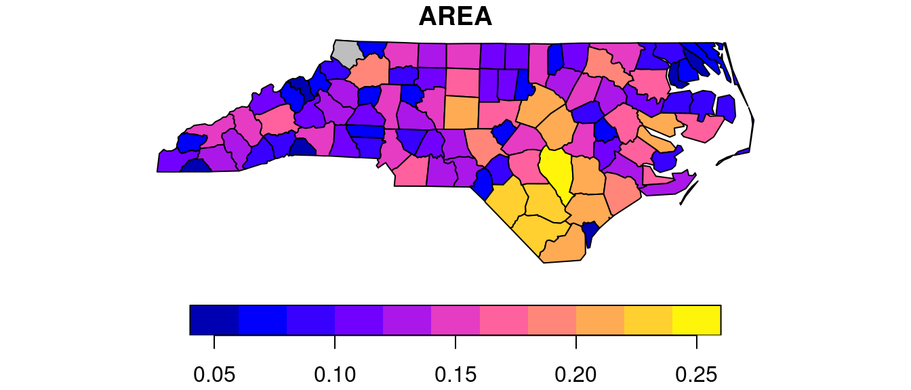
Following the MULTIPOLYGON data structure, in R we have a list of lists of lists of matrices. For instance, we get the first 3 coordinate pairs of the second exterior ring (first ring is always exterior) for the geometry of feature 4 by:
nc_geom[[4]][[2]][[1]][1:3,]## [,1] [,2]
## [1,] -76.02717 36.55672
## [2,] -75.99866 36.55665
## [3,] -75.91192 36.54253Geometry columns have their own class,
class(nc_geom)## [1] "sfc_MULTIPOLYGON" "sfc"3.2.2.4 sfg: simple feature geometry
Simple feature geometry (sfg) objects carry the geometry for a single feature, e.g. a point, linestring or polygon.
Simple feature geometries are implemented as R native data, using the following rules
- a single POINT is a numeric vector
- a set of points, e.g. in a LINESTRING or ring of a POLYGON is a
matrix, each row containing a point - any other set is a
list
The below figure illustrates the different types of geometries:
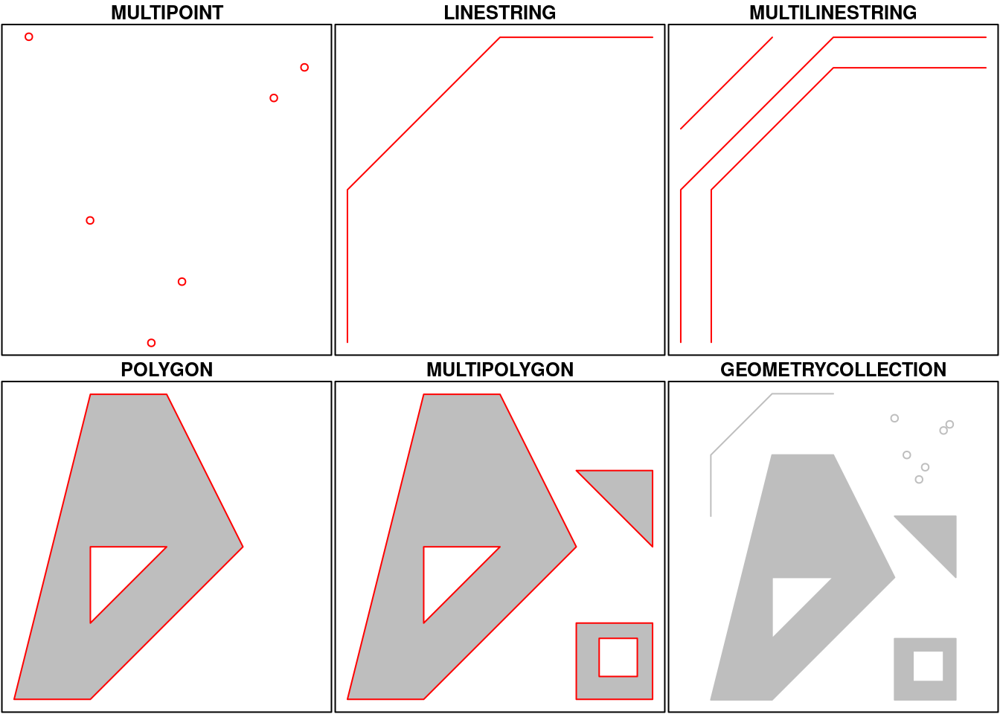
Geometries can also be empty, as in
(x <- st_geometrycollection())
## GEOMETRYCOLLECTION EMPTY
length(x)
## [1] 0The above are taken from the very well written, well-descriptive and thorough sf package vignette.
3.3 Data structures preparation
For this practical we will be using a human steatotic kidney dataset from the Liver Atlas (Guilliams et al. 2022). Specifically we will use the JBO019 sample.
3.3.1 Load new dataset
Note - Between now and section 3.8 nothing new is introduced (this is a repetition of the QC carried out in practical 2, but with this new liver dataset). Feel free to skip over this section and use the code block just before section 3.8 to run this QC quickly for this data.
First we generate the SpatialFeaturesExperiment object which is an extension of the SpatialExperiment (SPE) object that we used in the 2nd practical session. The difference is that the SFE object has incorporated the sf object structure and thus can accommodate the use of geocomputational tools.
sampleDir <- "./data/spaceranger_outs/Human_Liver_Steatotic/JBO019_Results"
sampleNames <- "JBO019"
sfe <- read10xVisiumSFE(samples = sampleDir,
sample_id = sampleNames,
type = "sparse",
data = "filtered",
images = "lowres",
style = "W",
zero.policy = TRUE)
ground_truth <- read_table("./data/to_load/spotzonationGroup.txt")3.4 Spot-level Quality Control
3.4.1 Calculating QC metrics
In this section we are effectively recapitlating the spot- and gene-level QC from practical 2 for this new dataset, in order that we can use it for the practical exercises in the next session.
is_mito <- grepl("(^MT-)|(^mt-)", rowData(sfe)$symbol)
sfe <- addPerLocQC(sfe, gTruth = ground_truth, assay = "counts", 2, subsets = list(mito = is_mito))
sfe <- addGeometries(sfe, samples = sampleDir, sample_id = sampleNames, res = "fullres")
sfe <- addPerGeneQC(sfe, assay = "counts", version = NULL, mirror = NULL)
colData(sfe)## DataFrame with 1185 rows and 15 columns
## in_tissue array_row array_col sample_id Barcode
## <logical> <integer> <integer> <character> <character>
## AAACAAGTATCTCCCA-1 TRUE 50 102 JBO019 AAACAAGTATCTCCCA-1
## AAACATTTCCCGGATT-1 TRUE 61 97 JBO019 AAACATTTCCCGGATT-1
## AAACCCGAACGAAATC-1 TRUE 45 115 JBO019 AAACCCGAACGAAATC-1
## AAACGAGACGGTTGAT-1 TRUE 35 79 JBO019 AAACGAGACGGTTGAT-1
## AAACTAACGTGGCGAC-1 TRUE 8 110 JBO019 AAACTAACGTGGCGAC-1
## ... ... ... ... ... ...
## TTGTAATCCGTACTCG-1 TRUE 35 55 JBO019 TTGTAATCCGTACTCG-1
## TTGTGAACCTAATCCG-1 TRUE 56 90 JBO019 TTGTGAACCTAATCCG-1
## TTGTGCAGCCACGTCA-1 TRUE 60 74 JBO019 TTGTGCAGCCACGTCA-1
## TTGTGTTTCCCGAAAG-1 TRUE 51 59 JBO019 TTGTGTTTCCCGAAAG-1
## TTGTTGTGTGTCAAGA-1 TRUE 31 77 JBO019 TTGTTGTGTGTCAAGA-1
## Capt_area annotation index sparsity sum
## <character> <character> <character> <numeric> <numeric>
## AAACAAGTATCTCCCA-1 1 NA spot_1 0.910410 13443
## AAACATTTCCCGGATT-1 1 NA spot_2 0.967805 2648
## AAACCCGAACGAAATC-1 1 Mid spot_3 0.864958 27733
## AAACGAGACGGTTGAT-1 1 Central spot_4 0.835818 32973
## AAACTAACGTGGCGAC-1 1 NA spot_5 0.995418 400
## ... ... ... ... ... ...
## TTGTAATCCGTACTCG-1 1 NA spot_1181 0.933716 7612
## TTGTGAACCTAATCCG-1 1 NA spot_1182 0.955831 4299
## TTGTGCAGCCACGTCA-1 1 NA spot_1183 0.978252 1452
## TTGTGTTTCCCGAAAG-1 1 NA spot_1184 0.956778 3831
## TTGTTGTGTGTCAAGA-1 1 Mid spot_1185 0.852160 27755
## detected subsets_mito_sum subsets_mito_detected
## <integer> <numeric> <integer>
## AAACAAGTATCTCCCA-1 2933 1021 12
## AAACATTTCCCGGATT-1 1054 285 12
## AAACCCGAACGAAATC-1 4421 2087 12
## AAACGAGACGGTTGAT-1 5375 821 12
## AAACTAACGTGGCGAC-1 150 182 11
## ... ... ... ...
## TTGTAATCCGTACTCG-1 2170 733 11
## TTGTGAACCTAATCCG-1 1446 515 12
## TTGTGCAGCCACGTCA-1 712 54 10
## TTGTGTTTCCCGAAAG-1 1415 422 11
## TTGTTGTGTGTCAAGA-1 4840 906 12
## subsets_mito_percent total
## <numeric> <numeric>
## AAACAAGTATCTCCCA-1 7.59503 13443
## AAACATTTCCCGGATT-1 10.76284 2648
## AAACCCGAACGAAATC-1 7.52533 27733
## AAACGAGACGGTTGAT-1 2.48992 32973
## AAACTAACGTGGCGAC-1 45.50000 400
## ... ... ...
## TTGTAATCCGTACTCG-1 9.62953 7612
## TTGTGAACCTAATCCG-1 11.97953 4299
## TTGTGCAGCCACGTCA-1 3.71901 1452
## TTGTGTTTCCCGAAAG-1 11.01540 3831
## TTGTTGTGTGTCAAGA-1 3.26428 27755rowData(sfe)## DataFrame with 32738 rows and 18 columns
## gene_name id mean detected total
## <character> <character> <numeric> <numeric> <numeric>
## ENSG00000243485 MIR1302-10 ENSG00000243485 0.00000000 0.000000 0
## ENSG00000237613 FAM138A ENSG00000237613 0.00000000 0.000000 0
## ENSG00000186092 OR4F5 ENSG00000186092 0.00000000 0.000000 0
## ENSG00000238009 RP11-34P13.7 ENSG00000238009 0.00590717 0.590717 7
## ENSG00000239945 RP11-34P13.8 ENSG00000239945 0.00000000 0.000000 0
## ... ... ... ... ... ...
## ENSG00000215635 AC145205.1 ENSG00000215635 0 0 0
## ENSG00000268590 BAGE5 ENSG00000268590 0 0 0
## ENSG00000251180 CU459201.1 ENSG00000251180 0 0 0
## ENSG00000215616 AC002321.2 ENSG00000215616 0 0 0
## ENSG00000215611 AC002321.1 ENSG00000215611 0 0 0
## JBO019.sparsity JBO019.total JBO019.nLocations JBO019.s_min
## <numeric> <numeric> <integer> <numeric>
## ENSG00000243485 1.000000 0 0 Inf
## ENSG00000237613 1.000000 0 0 Inf
## ENSG00000186092 1.000000 0 0 Inf
## ENSG00000238009 0.994093 7 7 1
## ENSG00000239945 1.000000 0 0 Inf
## ... ... ... ... ...
## ENSG00000215635 1 0 0 Inf
## ENSG00000268590 1 0 0 Inf
## ENSG00000251180 1 0 0 Inf
## ENSG00000215616 1 0 0 Inf
## ENSG00000215611 1 0 0 Inf
## JBO019.max JBO019.s_mean JBO019.s_median JBO019.s_SD
## <numeric> <numeric> <numeric> <numeric>
## ENSG00000243485 0 NaN NA NA
## ENSG00000237613 0 NaN NA NA
## ENSG00000186092 0 NaN NA NA
## ENSG00000238009 1 1 1 0
## ENSG00000239945 0 NaN NA NA
## ... ... ... ... ...
## ENSG00000215635 0 NaN NA NA
## ENSG00000268590 0 NaN NA NA
## ENSG00000251180 0 NaN NA NA
## ENSG00000215616 0 NaN NA NA
## ENSG00000215611 0 NaN NA NA
## JBO019.p_mean JBO019.p_median JBO019.p_SD JBO019.s_CV
## <numeric> <numeric> <numeric> <numeric>
## ENSG00000243485 0.00000000 0 0.0000000 NA
## ENSG00000237613 0.00000000 0 0.0000000 NA
## ENSG00000186092 0.00000000 0 0.0000000 NA
## ENSG00000238009 0.00590717 0 0.0766631 0
## ENSG00000239945 0.00000000 0 0.0000000 NA
## ... ... ... ... ...
## ENSG00000215635 0 0 0 NA
## ENSG00000268590 0 0 0 NA
## ENSG00000251180 0 0 0 NA
## ENSG00000215616 0 0 0 NA
## ENSG00000215611 0 0 0 NA
## JBO019.p_CV
## <numeric>
## ENSG00000243485 NaN
## ENSG00000237613 NaN
## ENSG00000186092 NaN
## ENSG00000238009 1297.8
## ENSG00000239945 NaN
## ... ...
## ENSG00000215635 NaN
## ENSG00000268590 NaN
## ENSG00000251180 NaN
## ENSG00000215616 NaN
## ENSG00000215611 NaNcolGeometries(sfe)## List of length 3
## names(3): spotPoly spotCntd spotHex3.4.2 Plot manual annotation
ggplot() +
geom_sf(aes(geometry = colGeometries(sfe)$spotHex$geometry, fill = colData(sfe)$annotation)) +
theme_void() +
theme(legend.position = "right") +
labs(fill = "Annotation")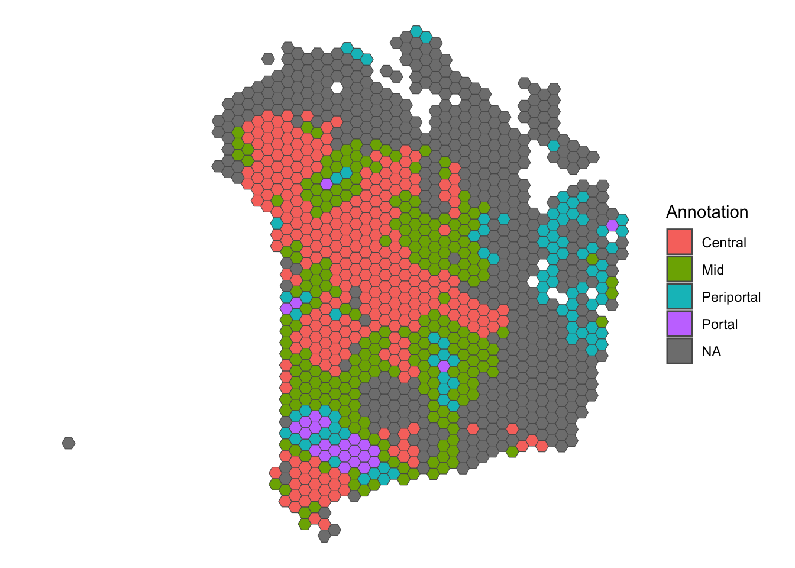
3.4.3 Library size threshold
# ----------------------------------------------- #
## Density and histogram of library sizes
ggplot(data = as.data.frame(colData(sfe)),
aes(x = sum)) +
geom_histogram(aes(y = after_stat(density)),
colour = "black",
fill = "grey",
bins = 50) +
geom_density(alpha = 0.5,
adjust = 0.5,
fill = "#A0CBE8",
colour = "#4E79A7") +
geom_vline(xintercept = c(1000, NA),
colour = "red",
linetype = "dashed") +
scale_x_continuous(breaks = scales::pretty_breaks(n = 10)) +
scale_y_continuous(breaks = scales::pretty_breaks(n = 10)) +
xlab("Library size") +
ylab("Density") +
theme_classic()## Warning: Removed 1 rows containing missing values (`geom_vline()`).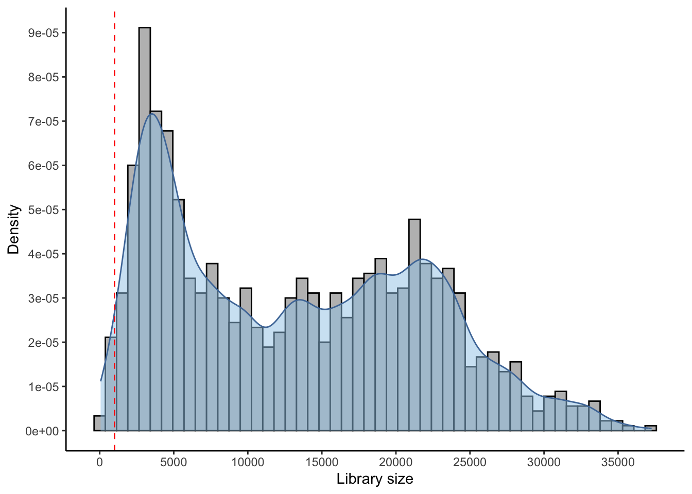
## Select library size threshold
qc_lib_size <- colData(sfe)$sum < 1000 #| colData(sfe)$sum > 45000
## Check how many spots are filtered out
table(qc_lib_size)## qc_lib_size
## FALSE TRUE
## 1166 19## Add threshold in colData
colData(sfe)$qc_lib_size <- qc_lib_size
## Check putative spatial patterns of removed spots
ggplot() +
geom_sf(data = colGeometry(sfe, "spotHex"),
aes(geometry = geometry)) +
geom_sf(data = colGeometry(sfe, "spotHex"),
aes(geometry = geometry, fill = colData(sfe)$qc_lib_size)) +
scale_fill_manual(values = c("grey95", "red")) +
labs(fill = "Discarded") +
theme_bw()3.4.4 Number of expressed genes
# ----------------------------------------------- #
## Density and histogram of expressed genes
ggplot(data = as.data.frame(colData(sfe)),
aes(x = detected)) +
geom_histogram(aes(y = after_stat(density)),
colour = "black",
fill = "grey",
bins = 50) +
geom_density(alpha = 0.5,
adjust = 0.5,
fill = "#A0CBE8",
colour = "#4E79A7") +
geom_vline(xintercept = c(550, NA),
colour = "red",
linetype = "dashed") +
scale_x_continuous(breaks = scales::pretty_breaks(n = 10)) +
scale_y_continuous(breaks = scales::pretty_breaks(n = 10)) +
xlab("Genes expressed in each spot") +
ylab("Density") +
theme_classic()## Warning: Removed 1 rows containing missing values (`geom_vline()`).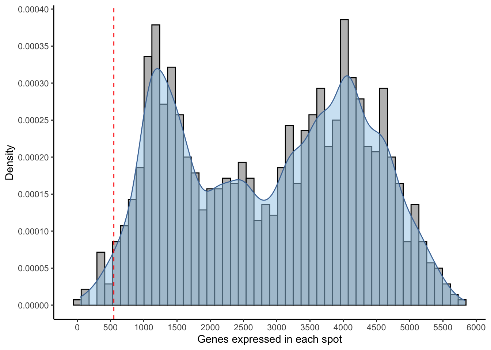
## Select expressed genes threshold
qc_detected <- colData(sfe)$detected < 550 #| colData(sfe)$detected > 6000
## Check how many spots are filtered out
table(qc_detected)## qc_detected
## FALSE TRUE
## 1165 20## Add threshold in colData
colData(sfe)$qc_detected <- qc_detected
## Check for putative spatial pattern of removed spots
ggplot() +
geom_sf(data = colGeometry(sfe, "spotHex"),
aes(geometry = geometry)) +
geom_sf(data = colGeometry(sfe, "spotHex"),
aes(geometry = geometry, fill = colData(sfe)$qc_detected)) +
scale_fill_manual(values = c("grey95", "red")) +
labs(fill = "Discarded") +
theme_bw()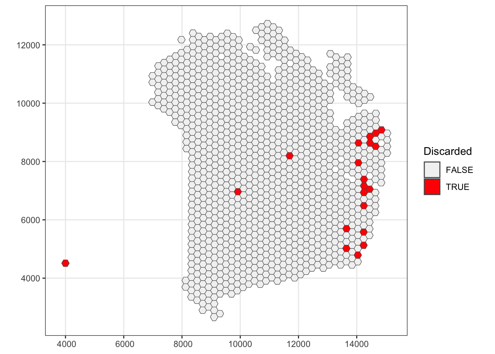
3.4.5 Percentage of mitochondrial expression
# ----------------------------------------------- #
## Density and histogram of percentage of mitochondrial expression
ggplot(data = as.data.frame(colData(sfe)),
aes(x = subsets_mito_percent)) +
geom_histogram(aes(y = after_stat(density)),
colour = "black",
fill = "grey",
bins = 50) +
geom_density(alpha = 0.5,
adjust = 0.5,
fill = "#A0CBE8",
colour = "#4E79A7") +
geom_vline(xintercept = c(22, NA),
colour = "red",
linetype = "dashed") +
scale_x_continuous(breaks = scales::pretty_breaks(n = 10)) +
scale_y_continuous(breaks = scales::pretty_breaks(n = 10)) +
xlab("Percentage of mitochondrial expression") +
ylab("Density") +
theme_classic()## Warning: Removed 1 rows containing missing values (`geom_vline()`).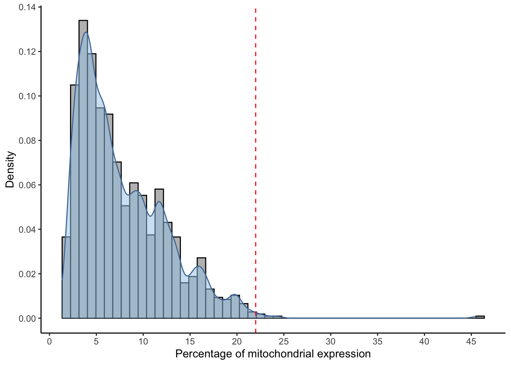
## Select mitochondrial percentage threshold
qc_mito <- colData(sfe)$subsets_mito_percent > 22
## Check how many spots are filtered out
table(qc_mito)## qc_mito
## FALSE TRUE
## 1180 5## Add threshold in colData
colData(sfe)$qc_mito <- qc_mito
## Check for putative spatial pattern of removed spots
ggplot() +
geom_sf(data = colGeometry(sfe, "spotHex"),
aes(geometry = geometry)) +
geom_sf(data = colGeometry(sfe, "spotHex"),
aes(geometry = geometry, fill = colData(sfe)$qc_mito)) +
scale_fill_manual(values = c("grey95", "red")) +
labs(fill = "Discarded") +
theme_bw()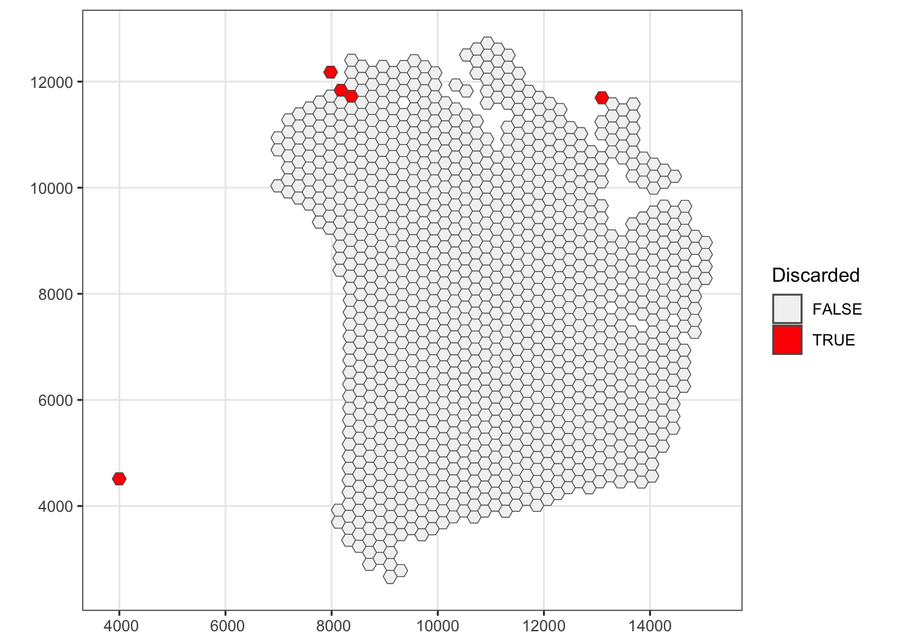
3.4.6 Remove low-quality spots
# ----------------------------------------------- #
## Check the number of discarded spots for each metric
apply(cbind(qc_lib_size, qc_detected, qc_mito), 2, sum)## qc_lib_size qc_detected qc_mito
## 19 20 5## Combine together the set of discarded spots
discard <- qc_lib_size | qc_detected | qc_mito
table(discard)## discard
## FALSE TRUE
## 1161 24## Store the set in the object
colData(sfe)$discard <- discard
## Check for putative spatial pattern of removed spots
ggplot() +
geom_sf(data = colGeometry(sfe, "spotHex"),
aes(geometry = geometry)) +
geom_sf(data = colGeometry(sfe, "spotHex"),
aes(geometry = geometry, fill = colData(sfe)$discard)) +
scale_fill_manual(values = c("grey95", "red")) +
labs(fill = "Discarded") +
theme_bw()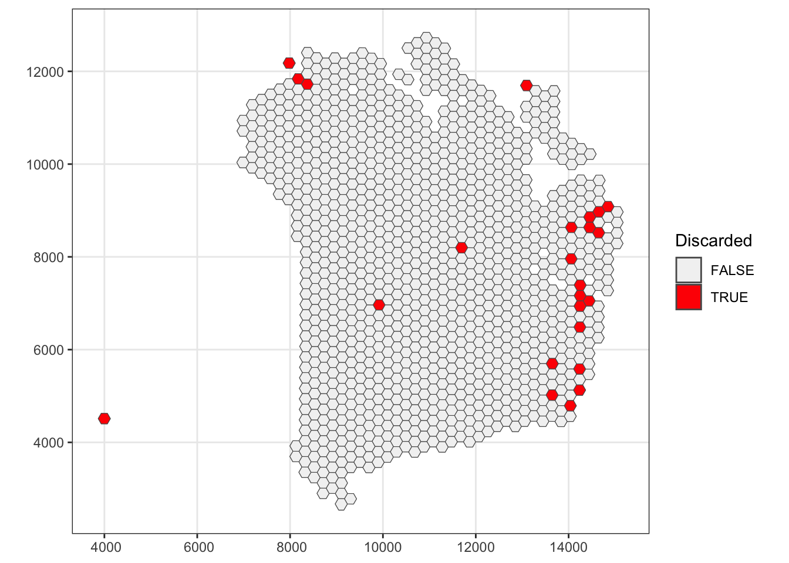
# ----------------------------------------------- #
## remove combined set of low-quality spots
sfe <- sfe[, !colData(sfe)$discard]3.5 Normalisation of counts
3.5.1 Log-tranformation of counts
## Calculate library size factors
sfe <- computeLibraryFactors(sfe)
## Have a look at the size factors
summary(sizeFactors(sfe))## Min. 1st Qu. Median Mean 3rd Qu. Max.
## 0.07961 0.36902 0.95469 1.00000 1.54936 2.77256## Density and histogram of library sizes
ggplot(data = data.frame(sFact = sizeFactors(sfe)),
aes(x = sFact)) +
geom_histogram(aes(y = after_stat(density)),
colour = "black",
fill = "grey",
bins = 40) +
geom_density(alpha = 0.5,
adjust = 0.5,
fill = "#A0CBE8",
colour = "#4E79A7") +
scale_x_continuous(breaks = scales::pretty_breaks(n = 10)) +
scale_y_continuous(breaks = scales::pretty_breaks(n = 10)) +
xlab("Library size") +
ylab("Density") +
theme_classic()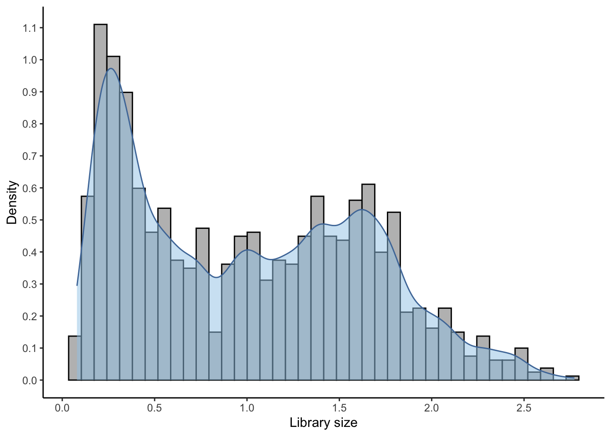
# calculate logcounts using library size factors
sfe <- logNormCounts(sfe)3.6 Gene-level Quality Control
3.6.1 Calculating extra QC metrics
rowData(sfe)[["JBO019.s_logMean"]] <- rowSums(assay(sfe, "logcounts")) / rowData(sfe)[["JBO019.nLocations"]]3.6.2 Set and apply filters
is_zero <- rowData(sfe)$total == 0
is_logLow <- rowData(sfe)[["JBO019.s_logMean"]] <= 1
discard_gs <- is_zero | is_mito | is_logLow
table(discard_gs)## discard_gs
## FALSE TRUE
## 8535 24203rowData(sfe)$discard <- discard_gs
## FEATURE SELECTION
## remove mitochondrial and other genes
sfe <- sfe[!rowData(sfe)$discard, ]3.7 Selecting genes
3.7.1 Highly Variable Genes (HVGs)
## Fit mean-variance relationship
dec <- modelGeneVar(sfe,
assay.type = "logcounts")
## Visualize mean-variance relationship
fit <- metadata(dec)
fit_df <- data.frame(mean = fit$mean,
var = fit$var,
trend = fit$trend(fit$mean))
## Select top HVGs
top_hvgs <- getTopHVGs(dec,
var.field = "bio",
prop = 0.5,
var.threshold = 0,
fdr.threshold = 0.1)
fit_df <- fit_df %>%
tibble::rownames_to_column(var = "row.names") %>%
dplyr::mutate(topHVGs = ifelse(row.names %in% top_hvgs, TRUE, FALSE)) %>%
tibble::column_to_rownames("row.names")
ggplot(data = fit_df,
aes(x = mean, y = var, colour = topHVGs)) +
geom_point() +
geom_line(aes(y = trend), colour = "dodgerblue", linewidth = 1.5) +
scale_colour_manual(values = c("black", "red")) +
labs(x = "Mean of log-expression",
y = "Variance of log-expression",
colour = "Top HVGs") +
theme_classic()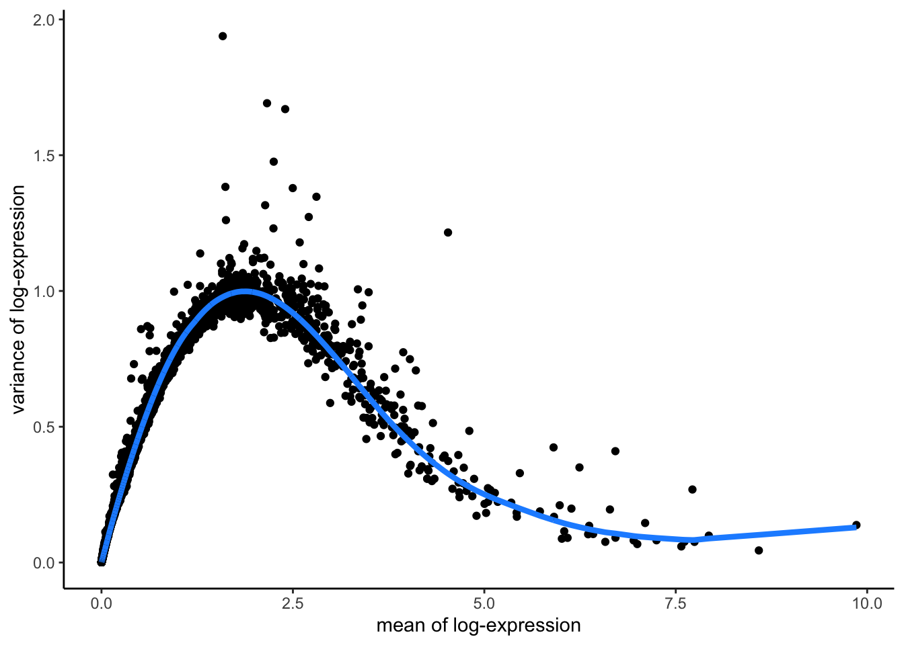
3.7.2 Code for 3.3 to 3.7
## Import data
sampleDir <- "./data/spaceranger_outs/Human_Liver_Steatotic/JBO019_Results"
sampleNames <- "JBO019"
sfe <- read10xVisiumSFE(samples = sampleDir,
sample_id = sampleNames,
type = "sparse",
data = "filtered",
images = "lowres",
style = "W",
zero.policy = TRUE)
# ----------------------------------------------- #
ground_truth <- read_table("./data/to_load/spotzonationGroup.txt")
## Add QC metrics
is_mito <- grepl("(^MT-)|(^mt-)", rowData(sfe)$symbol)
sfe <- addPerLocQC(sfe, gTruth = ground_truth, assay = "counts", 2, subsets = list(mito = is_mito))
sfe <- addGeometries(sfe, samples = sampleDir, sample_id = sampleNames, res = "fullres")
sfe <- addPerGeneQC(sfe, assay = "counts", version = NULL, mirror = NULL)
# ----------------------------------------------- #
## SPOT SELECTION
## Select library size threshold
qc_lib_size <- colData(sfe)$sum < 1000
## Add threshold in colData
colData(sfe)$qc_lib_size <- qc_lib_size
## Select expressed genes threshold
qc_detected <- colData(sfe)$detected < 550
## Add threshold in colData
colData(sfe)$qc_detected <- qc_detected
## Select mitochondrial percentage threshold
qc_mito <- colData(sfe)$subsets_mito_percent > 22
## Add threshold in colData
colData(sfe)$qc_mito <- qc_mito
## Combine together the set of discarded spots
discard <- qc_lib_size | qc_detected | qc_mito
## Store the set in the object
colData(sfe)$discard <- discard
## Remove combined set of low-quality spots
sfe <- sfe[, !colData(sfe)$discard]
# ----------------------------------------------- #
## FEATURE SELECTION
## Calculate library size factors
sfe <- computeLibraryFactors(sfe)
## Calculate logcounts using library size factors
sfe <- logNormCounts(sfe)
## Calculate log-counts sample mean
rowData(sfe)[["JBO019.s_logMean"]] <- rowSums(assay(sfe, "logcounts")) / rowData(sfe)[["JBO019.nLocations"]]
## Set and apply filters
is_zero <- rowData(sfe)$total == 0
is_logLow <- rowData(sfe)[["JBO019.s_logMean"]] <= 1
discard_gs <- is_zero | is_mito | is_logLow
rowData(sfe)$discard <- discard_gs
## Remove mitochondrial and other genes
sfe <- sfe[!rowData(sfe)$discard, ]
## Fit mean-variance relationship
dec <- modelGeneVar(sfe,
assay.type = "logcounts")
## Select top HVGs
top_hvgs <- getTopHVGs(dec,
var.field = "bio",
prop = 0.5,
var.threshold = 0,
fdr.threshold = 0.05)3.8 Neighbour graph and distance matrix
3.8.1 Adding spatial weights
The neighbour lists can be supplemented with spatial weights using the nb2listw and nb2listwdist function from spdep package for the chosen type and coding scheme style. There are 6 different coding scheme styles that can be used to weigh neighbour relationships:
- B: is the basic binary coding (1 for neighbour, 0 for no neighbour).
- W: is row standardised (sums over all links to n).
- C: is globally standardised (sums over all links to n).
- U: is equal to C divided by the number of neighbours (sums over all links to unity).
- S: is the variance-stabilizing coding scheme (sums over all links to n).
- minmax: divides the weights by the minimum of the maximum row sums and maximum column sums of the input weights; It is similar to the C and U styles.
The coding scheme style is practically the value each neighbour will get. For example, in a binary coding scheme style (B) if a spot is a neighbour of the spot in focus then gets the value of 1, else gets 0. Another example, in a row standardised coding scheme style (W) if the spot in focus has a total of 10 neighbours and each neighbour has a weight of 1, then the sum of all neighbour weights is 10, and each neighbour will get a normalised weight of 1/10 = 0.1. As a result, in the row standardised coding scheme, spots with many neighbours will have neighbours with lower weights and thus will not be over-emphasised.
Starting from a binary neighbours list, in which regions are either listed as neighbours or are absent (thus not in the set of neighbours for some definition), we can add a distance-based weights list. The nb2listwdist function supplements a neighbours list with spatial weights for the chosen types of distance modelling and coding scheme. While the offered coding schemes parallel those of the nb2listw function above, three distance-based types of weights are available: inverse distance weighting (IDW), double-power distance weights (DPD), and exponential distance decay (EXP). The three types of distance weight calculations are based on pairwise distances 𝑑𝑖𝑗, all of which are controlled by parameter “alpha” (𝛼 below):
- idw: 𝑤𝑖𝑗=𝑑−𝛼𝑖𝑗,
- exp: 𝑤𝑖𝑗=exp(−𝛼⋅𝑑𝑖𝑗),
- dpd: 𝑤𝑖𝑗=[1−(𝑑𝑖𝑗/𝑑max)𝛼]𝛼,
the latter of which leads to 𝑤𝑖𝑗=0 for all 𝑑𝑖𝑗>𝑑max. Note that IDW weights show extreme behaviour close to 0 and can take on the value infinity. In such cases, the infinite values are replaced by the largest finite weight present in the weights list.
3.8.2 Generate distance matrices
A distance matrix is a mirrored matrix that contains the distance between a spot and every other spot. This distance can be a simple Euclidean distance based on the coordinates of the spots or a weighted distance according to a bandwidth around each spot using a kernel that gives higher scores to distances between spots that are closer together compared to the ones that are farther away. These weighted distance matrices are later used to run geographically weighted (GW) models.
There are 6 different kernels that can be used to weight the distances between spots. The next two figures are from the GWmodel publication (Gollini et al. 2015) and illustrate the mathematical application of these kernals, and show graphically how they weight by distance.
Figure 3.2: The math equations that define the kernels.
Figure 3.3: Examples from using each kernel.
In the below we choose one of the many possible ways of building a neighbour graph for the steatotic liver data set. In this example we are using a k-nearest neighbours approach with row-standardised distance-based weights.
## add a neighbour graph using a weighted distance matrix
sfe <- addSpatialNeighGraphs(sfe, "JBO019", type = "knearneigh", style = "W", distMod = "raw", k = 6)
colGraphs(sfe)## $col
## Characteristics of weights list object:
## Neighbour list object:
## Number of regions: 1161
## Number of nonzero links: 6966
## Percentage nonzero weights: 0.5167959
## Average number of links: 6
## Non-symmetric neighbours list
##
## Weights style: W
## Weights constants summary:
## n nn S0 S1 S2
## W 1161 1347921 1161 376.8333 4674.667## Calculate a simple distance matrix
sfe <- addDistMat(sfe, p = 2)We can use a geom from the tidyterra package (commonly used for map visualisations) to plot the neighbour graph we generated in the previous step.
## Retrieve the tissue image
sfei <- getImg(sfe, image_id = "lowres")
## Extract the spot locations
spot_coords <- spatialCoords(sfe) %>% as.data.frame()
## Set limits
xlim <- c(min(spot_coords$pxl_col_in_fullres) - 100,
max(spot_coords$pxl_col_in_fullres) + 100)
ylim <- c(min(spot_coords$pxl_row_in_fullres) - 100,
max(spot_coords$pxl_row_in_fullres) + 100)
nbs <- colGraph(sfe)
ggplot() +
geom_spatraster_rgb(data = imgRaster(sfei)) +
geom_sf(data = as(nb2lines(nbs$neighbours, coords = spatialCoords(sfe)), "sf")) +
lims(x = xlim, y = ylim) +
coord_sf() +
theme_void()## Warning in CRS(proj4string): CRS: projargs should not be NULL; set to NA
Now that we have a fully QC-ed dataset with spatial weights and a neighbour graph applied, we have prepared our data fully for the application of geospatial methods - specifically in practical 4, geogrpahically weighted principal components analysis (GWPCA).
3.9 Putting it all together
The below code puts all these steps in order by selecting one of the options at each step.
## Import data
sampleDir <- "./data/spaceranger_outs/Human_Liver_Steatotic/JBO019_Results"
sampleNames <- "JBO019"
sfe <- read10xVisiumSFE(samples = sampleDir,
sample_id = sampleNames,
type = "sparse",
data = "filtered",
images = "lowres",
style = "W",
zero.policy = TRUE)
# ----------------------------------------------- #
ground_truth <- read_table("./data/to_load/spotzonationGroup.txt")
## Add QC metrics
is_mito <- grepl("(^MT-)|(^mt-)", rowData(sfe)$symbol)
sfe <- addPerLocQC(sfe, gTruth = ground_truth, assay = "counts", 2, subsets = list(mito = is_mito))
sfe <- addGeometries(sfe, samples = sampleDir, sample_id = sampleNames, res = "fullres")
sfe <- addPerGeneQC(sfe, assay = "counts", version = NULL, mirror = NULL)
# ----------------------------------------------- #
## SPOT SELECTION
## Select library size threshold
qc_lib_size <- colData(sfe)$sum < 1000
## Add threshold in colData
colData(sfe)$qc_lib_size <- qc_lib_size
## Select expressed genes threshold
qc_detected <- colData(sfe)$detected < 550
## Add threshold in colData
colData(sfe)$qc_detected <- qc_detected
## Select mitochondrial percentage threshold
qc_mito <- colData(sfe)$subsets_mito_percent > 22
## Add threshold in colData
colData(sfe)$qc_mito <- qc_mito
## Combine together the set of discarded spots
discard <- qc_lib_size | qc_detected | qc_mito
## Store the set in the object
colData(sfe)$discard <- discard
## Remove combined set of low-quality spots
sfe <- sfe[, !colData(sfe)$discard]
# ----------------------------------------------- #
## FEATURE SELECTION
## Calculate library size factors
sfe <- computeLibraryFactors(sfe)
## Calculate logcounts using library size factors
sfe <- logNormCounts(sfe)
## Calculate log-counts sample mean
rowData(sfe)[["JBO019.s_logMean"]] <- rowSums(assay(sfe, "logcounts")) / rowData(sfe)[["JBO019.nLocations"]]
## Set and apply filters
is_zero <- rowData(sfe)$total == 0
is_logLow <- rowData(sfe)[["JBO019.s_logMean"]] <= 1
discard_gs <- is_zero | is_mito | is_logLow
rowData(sfe)$discard <- discard_gs
## Remove mitochondrial and other genes
sfe <- sfe[!rowData(sfe)$discard, ]
## Fit mean-variance relationship
dec <- modelGeneVar(sfe,
assay.type = "logcounts")
## Select top HVGs
top_hvgs <- getTopHVGs(dec,
var.field = "bio",
prop = 0.5,
var.threshold = 0,
fdr.threshold = 0.05)
# ----------------------------------------------- #
## ADD GEOGRAPHY
## Add a neighbour graph using a weighted distance matrix
sfe <- addSpatialNeighGraphs(sfe, "JBO019", type = "knearneigh", style = "W", distMod = "raw", k = 6)
## Calculate a simple distance matrix
sfe <- addDistMat(sfe, p = 2)